Optimizer-induced symmetry drift biases sharpness comparisons between Adam and SGD. This page summarizes the experiments in the paper (paper/main.pdf) with the same figures.
A ReLU network computes the same function if one neuron's incoming weights are multiplied by some c > 0 and its outgoing weights divided by c. Most sharpness measures (Hessian trace, random weight noise, SAM sharpness) are not invariant to this, so they mix two things: how sharp the learned function is, and where on this set of equivalent weights the network sits. SGD cannot move between equivalent weights to first order. Adam can, and it drifts toward the weights where its trace is close to the minimum. On a CIFAR-10 MLP this alone makes Adam look about 2× flatter, which is enough to reverse the ranking against SGD.
636 CPU runs over 14 experiments and 24 GPU runs of ResNet-18. The 144 main runs were measured with 17 sharpness measures at five matched training losses.
Part of the Adam/SGD Hessian-trace ratio due to weight scaling alone: −1.02 bits, 95% CI [−1.16, −0.87].
Raw trace divided by its minimum over equivalent weights: Adam vs SGD, SGD+momentum and SAM (medians).
At train loss 0.1, raw Hessian trace vs minimum sharpness.
Removing Adam's drift: raw trace vs invariant sharpness, same function.
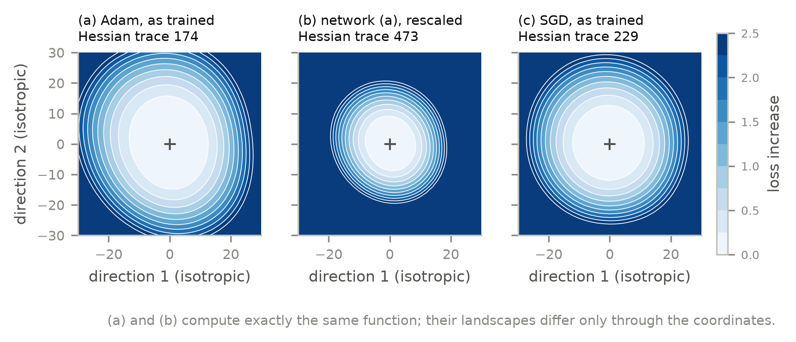
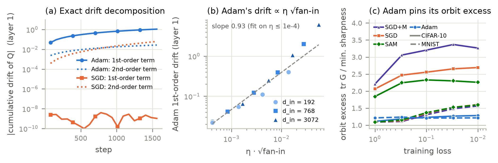
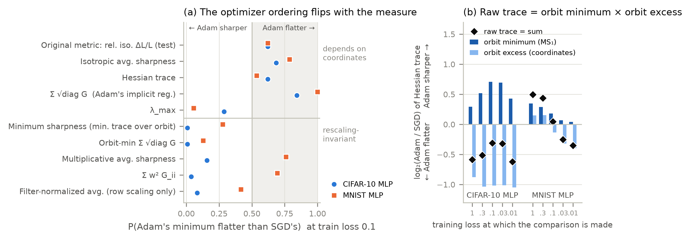
| Measure | Type | loss 0.3 | loss 0.1 | loss 0.01 |
|---|---|---|---|---|
| Relative loss increase under noise (ΔL/L, test) | raw | 0.66 | 0.62 [0.40, 0.81] | 0.67 |
| Hessian trace (= Gauss–Newton trace for these networks) | raw | 0.75 | 0.64 [0.44, 0.83] | 0.72 |
| λmax | raw | 0.37 | 0.29 | 0.45 |
| Minimum sharpness | invariant | 0.06 | 0.01 [0.00, 0.06] | 0.22 |
| Filter-normalized noise | row scaling only | 0.14 | 0.08 | 0.06 |
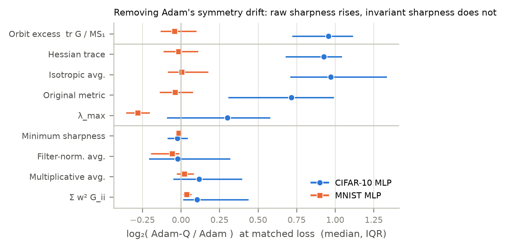
Adam-Q is Adam followed, after every update, by a rescaling of each neuron that restores Q to its initial value. The function is unchanged.
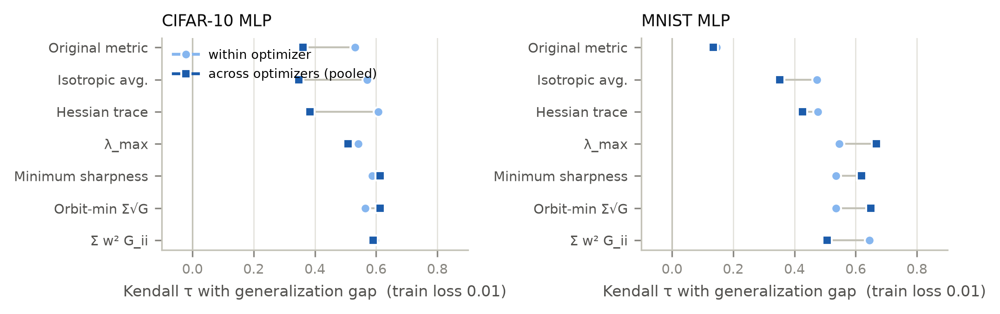
The first version of this project (the TensorFlow scripts in LossLandscapeProject/) found Adam flatter than SGD after 20 epochs. Re-running that protocol (raw 0–1 inputs, full datasets, 20 epochs, batch 64, SGD lr 0.01, Adam lr 0.001) with five seeds reproduces the result, for a different reason on each dataset.
| Mean over 5 seeds | CIFAR-10 SGD | CIFAR-10 Adam | MNIST SGD | MNIST Adam |
|---|---|---|---|---|
| ΔL/L under noise | 0.034 | 0.012 | 0.040 | 0.014 |
| Training loss at measurement | 1.42 | 1.29 | 0.136 | 0.008 |
| Hessian trace | 1004 | 395 | 96.2 | 9.7 |
| = minimum sharpness | 353 | 320 | 72.0 | 8.0 |
| × orbit excess | 2.85 | 1.23 | 1.34 | 1.21 |
| Filter-normalized noise (×10⁴) | 78 | 207 | 41 | 17 |
The 2.5× trace gap is almost entirely the coordinate factor (excess 2.85 vs 1.23). Minimum sharpness is nearly equal.
After 20 epochs Adam's training loss is 17× lower than SGD's, and cross-entropy curvature shrinks with the loss. At equal loss the gap disappears.
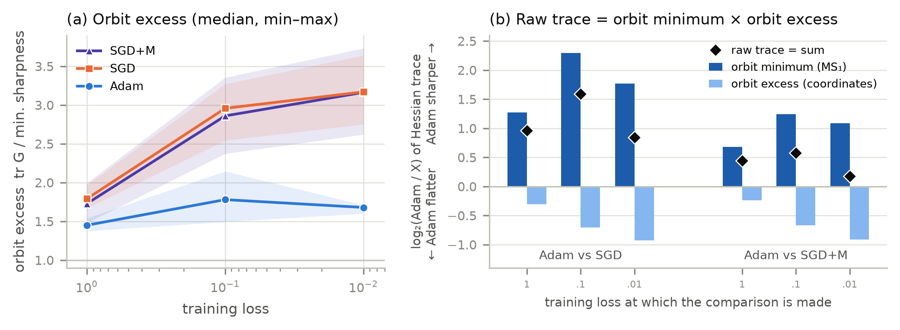
Two conv layers and two dense layers on CIFAR-10, with the rescaling applied per channel and carried through max-pooling and flatten.
The three Adam runs at the lower learning rate hit the 150-epoch cap at loss 0.018–0.034, so the loss-0.01 comparison uses the other three.
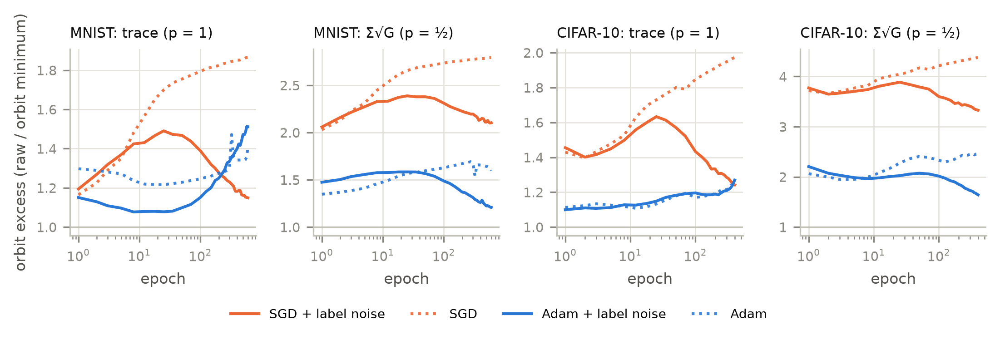
Implicit-regularization theory predicts that with persistent gradient noise SGD drifts toward minimum trace (Blanc et al.; Damian et al.) and Adam toward minimum Σ√Gii (Li et al. 2025). On the rescaling orbit both targets can be computed exactly.
Every 100 steps, SGD or SGD+M is moved to the minimum-trace point of its orbit (function unchanged, momentum buffer transformed accordingly). Four learning rates per optimizer, two seeds, CIFAR-10 MLP.
10 of 16 teleported runs diverged, against 0 of 16 without teleports. Each teleport raised λmax by 3–20%, to within 5% of or above 2/η in 8 of 11 cases. Since SGD already trains near the edge of stability, the teleports push it over.
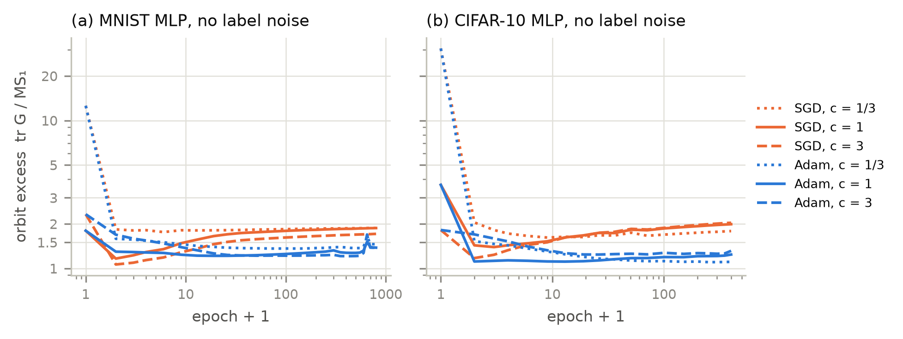
Since SGD conserves Q, one might expect it to keep the excess it starts with. It does not.
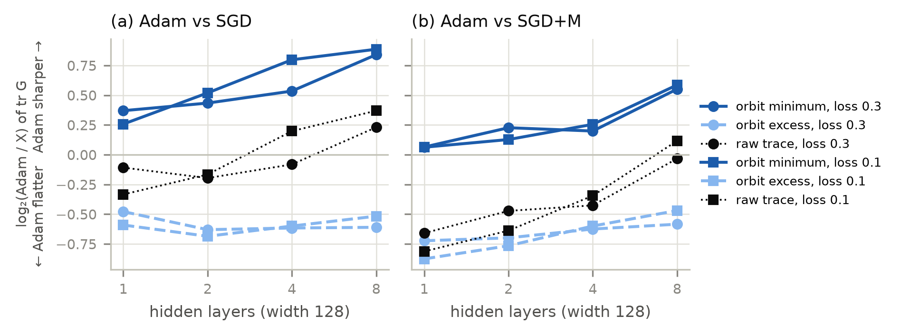
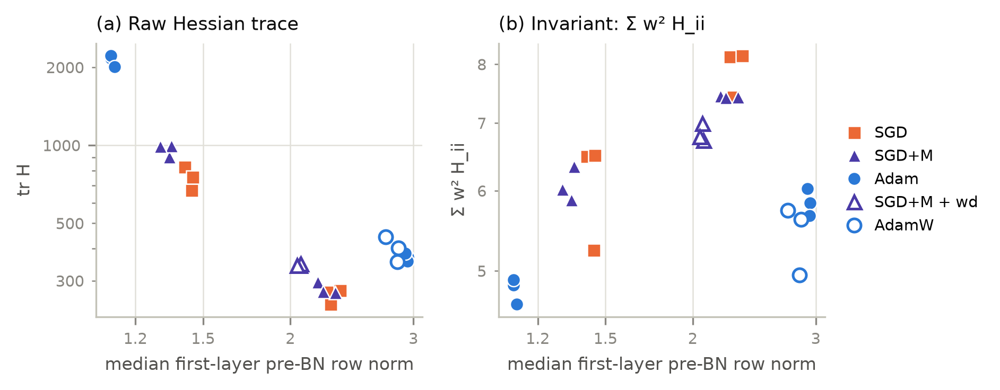
With BatchNorm, scaling a row of pre-BN weights changes nothing, and curvature scales like 1/(row norm)². The norm is mostly set by the learning rate.
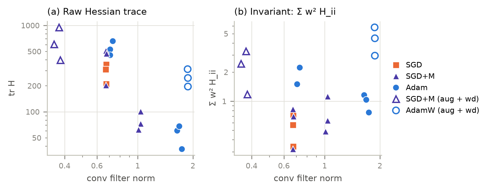
ResNet-18 has BatchNorm after every convolution, so this tests the BatchNorm regime, not the ReLU-orbit decomposition.
python scripts/sweep.py <name>| Sweep | Runs | Purpose |
|---|---|---|
pilot_cifar | 12 | Pilot with the original preprocessing (λmax ≈ 2/lr) |
calib_cifar10, calib_mnist | 96 | Stable learning rates per batch size |
main_cifar10_mlp, main_mnist_mlp | 144 | SGD, SGD+M, SAM, Adam × 2 lrs × 3 batch sizes × 3 seeds; 17 measures at 5 matched losses |
drift | 90 | Per-step drift bookkeeping, scaling law, RMSprop and signSGD |
interv_cifar10, interv_mnist | 36 | Adam-Q intervention |
orig_replication | 20 | Original protocol, 5 seeds |
cnn_cifar10 | 18 | CNN with per-channel rescaling |
func_adamq | 36 | Adam-Q controls (every 50 steps, one layer, no moment transform) |
func_teleport | 32 | Teleporting SGD / SGD+M to minimum trace |
orbit_dynamics | 32 | 400–600 epoch runs with and without label noise |
coordinate_memory | 48 | Same function started at three orbit points |
depth_cifar10 | 36 | MLPs with 1, 2, 4, 8 hidden layers |
bn_cifar10 | 24 | BatchNorm MLP; SGD, SGD+M, Adam, SGD+M with weight decay, AdamW |
adam_orbit | 12 | Adam held at the minimum-trace or minimum-norm orbit point |
resnet18_noaug, resnet18_aug | 24 | ResNet-18 on full CIFAR-10 (GPU), without and with augmentation and weight decay |